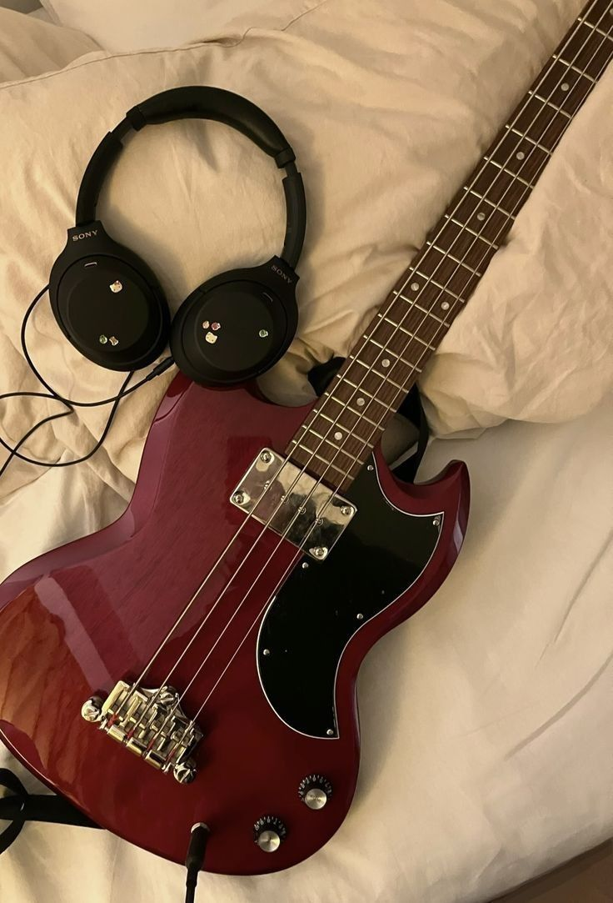
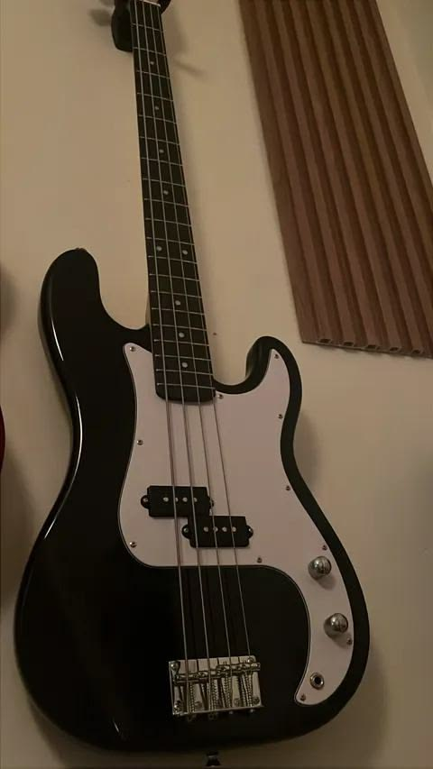

Guitars come in many shapes and styles, each offering a unique sound and feel. Here are the three most common types you'll see as a beginner.
The acoustic guitar produces sound naturally through its hollow wooden body. It's great for beginners because it's simple, portable, and doesn't require extra equipment.

Electric guitars use pickups and an amplifier to create sound. They're perfect for rock, metal, blues, and many modern styles of music.

The bass guitar plays lower notes and helps create the rhythm and groove in a band. It usually has four strings and a deeper tone.
| Type | Sound | Best For |
|---|---|---|
| Acoustic | Warm, natural | Beginners, singer-songwriters |
| Electric | Amplified, versatile | Rock, blues, metal |
| Bass | Deep, low-end | Bands, rhythm sections |